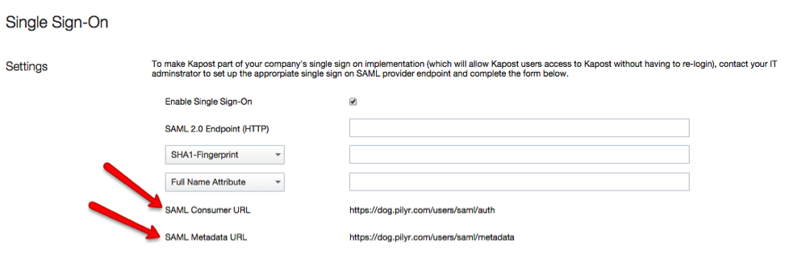
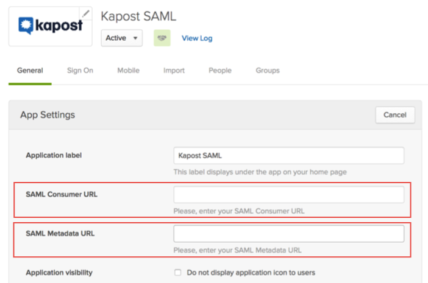
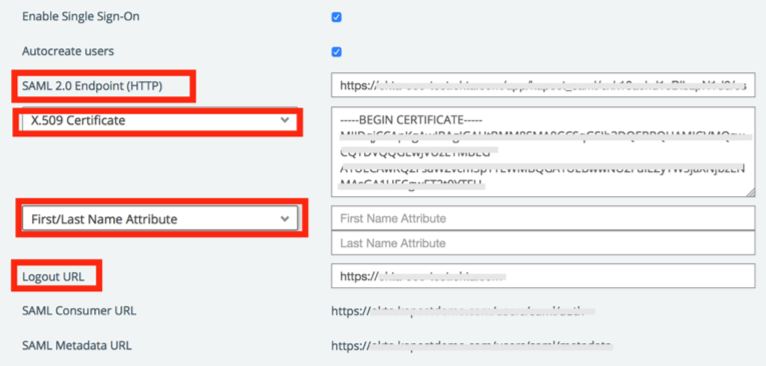
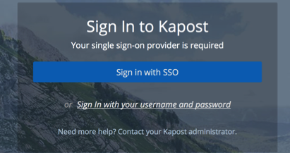

Login to Kapost as an administrator, then navigate to Settings > Single Sign On.
Check the Enable Sign Sign-On box.
Make a copy of the values from the SAML Consumer URL and SAML Metadata URL fields.

In Okta, select the General tab for the Kapost app and enter the values you just saved into the corresponding fields, as shown below:

Click Save.
In Kapost SSO Settings section, enter the following (see screen shot at end of step for reference):
SAML 2.0 Endpoint (HTTP): Copy and paste the following Login URL/SignOn URL:
Sign into the Okta Admin Dashboard to generate this variable.
X.509 Certificate: Use the dropdown menu and select X.509 Certificate, then copy and paste the following:
Sign into the Okta Admin Dashboard to generate this variable.
First/Last Name Attribute: Enter First Name and Last Name attributes:
Logout URL: Copy and paste the following:
Sign into the Okta Admin Dashboard to generate this variable.

Done!
Notes:
IdP-initiated flows, SP-initiated flows, and Just In Time (JIT) provisioning are all supported.
For SP-initiated flows, use SAML Consumer URL and then select Sign in with SSO.
